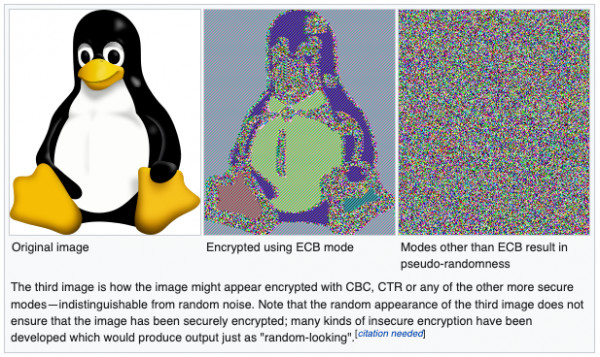
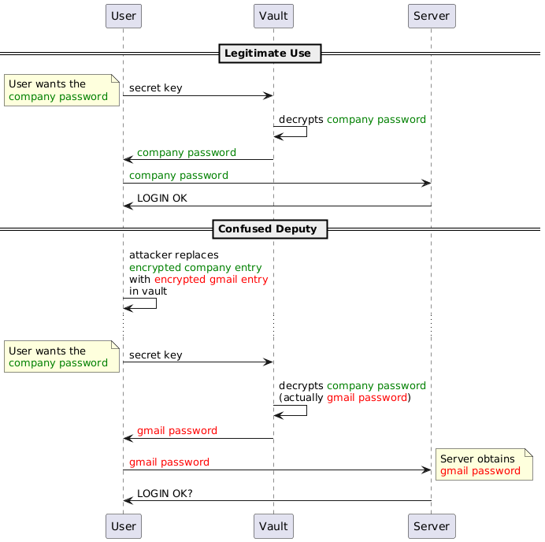

A look at the Vault password manager
Motivation
I recently had a look at many password managers and I stumbled on Vault which is a relatively small Python project (no relation to Hashicorp Vault). This project happens to showcase several vulnerabilities common to storage encryption that I think make it a nice and educational case.
The author was contacted but all development is halted on the project and none of the vulnerabilities we will discuss is exploitable with the default configuration. Still, it's worth noting that we're discussing unfixed issues.
Presentation
Vault is a password manager that relies on symmetric cryptography (so the same key is used for encryption and decryption of the passwords). It uses two layers of security: the first is an encrypted database using SQLCipher, the second is homemade encryption of specific fields. It's this second layer that we're going to discuss.
In the default configuration Vault none of the vulnerabilities are exploitable due to SQLCipher. It is however possible to disable SQLCipher and these configurations are vulnerable. I'll suppose that we're in this vulnerable configuration for what follows.
Of course, the goal of this blog post isn't to dunk on a small python project, but to take some time to understand the kind of specific cryptographical issues that can arise in such software.
You don't protect what you don't encrypt
Vault encrypts several elements (passwords, notes…) but not every aspect of an entry is. That's a mistake.
This is pretty straightforward: if I'm an attacker and I can see a list of URLs I'm already very happy. There might be important information within the URL, there might be blackmail potential ("feetlover.xxx"), there are many indications of habits that can help set a phishing campaign (here's a LinkedIn password, let's send a LinkedIn-looking email). The same is true of login (often emails) and entry names.
In general, you should encrypt as much as possible to avoid leaking important metadata. You don't protect what you don't encrypt.
This is a short point, easily dismissed, but just because it's not a very technical point it's a very important aspect of data safety.
Keys must be derived from a PBKDF
Vault uses SHA256 to transform the master password into an encryption key for AES-256.
def digest_key(self):
"""
Use SHA-256 over our key to get a proper-sized AES key
"""
# Add optional salt to key
key = self.key
if self.salted_key:
key = self.salted_key
return SHA256.new(key).digest()The issue is that SHA-256 is not designed to produce keys and lacks many security features to be suitable for that task. The result is a known-plaintext attack that leads to an attack on the master key.
Let's say that I'm an attacker and I have access to the encrypted database but not the master key. It is an important requirement, but this case is the reason why we use encryption in the first place so it's not unreasonable. Now let's say that I know any 1 plaintext password from the vault: either gained through phishing, through a leaked hacked database, or because I own one of the websites. Since I possess both the plaintext and ciphertext for that entry I can try encrypting the plaintext with different master passwords and check if the ciphertext matches. If it does, I found the correct master password.
In essence that attack turns a couple plaintext/ciphertext into a hash which I can crack like any other hash. The hash function in that case is SHA256+AES-256, both of which are designed to be as fast and optimized as possible, making the cracking process very easy.
This is why it's very important to use a proper Password-Based Key Derivation Function (PBKDF). The best is argon2, then scrypt, not bcrypt which isn't a KDF and not PBKDF2 which is deprecated because the only way to make it secure it to use an insanely high number of rounds so it takes several seconds to compute.
If argon2 for example was used here, I could of course use the same strategy of encrypting a known plaintext with a candidate password to compare it with the ciphertext found in the database, but that process would be
very slow,
very much not GPU-friendly and
very memory intensive. Nothing a user would notice during normal use, but enough to make testing tons of passwords unfeasible.
And if the attacker doesn't know any plaintext password, they can attack the notes: any DB is pretty much guaranteed to have at least 1 empty note and that's a plaintext. You can just encrypt the empty string (for every salt and IV) and see whether one matches the encrypted note. It's slower since it's not focused on 1 "hash" but it's not too bad.
Also, note that salts play no real role here since every encrypted field already has a random value unique to that encryption: the IV.
So, to be clear, Vault should use argon2, not SHA-256, otherwise an attacker with access to the encrypted passwords may use them to crack the master key. This is the most important issue of this mail since its prerequisite (having access to the encrypted passwords) falls into the core of a password manager's threat model.
Contexts must be bound
Vault uses AES with the CBC block cipher mode. CBC is not an AEAD and this means that it doesn't provide tools to authenticate data and bind contexts. This allows a Confused Deputy attack.
Block cipher modes
Every time we talk about AES we end up talking about modes. That's because they're the unsung heroes of block cipher cryptography. AES is a solid block cipher. This means that it's very good at its job, and that its job is to take 128 bits of data with a key and to output 128 bits of random-looking data. The world of AES starts and stops at 128 bits of data: it cannot work on anything smaller or larger (and if you're wondering, the 256 in AES-256 refers to the key size, but it's still only a block size of 128 bits).
Of course that's an issue as we rarely have to encrypt exactly 128 bits of data. So we developed systems to work around these limitations. Paddings allow us to work with less than 128 bits, modes allow us to work with more.
A mode is how we chunk and combine data so it can be used by a block cipher such as AES. There are tons of modes such as ECB, CBC, CTR, OFB, GCM… And while AES on its own is very good at its job, choosing the wrong mode can completely break encryption. This is an extremely common point of failure for systems boasting "Military grade AES-256 security!" without considering that AES alone can't do much.
An example of a block cipher that must never be used is ECB as demonstrated by the famous ECB Penguin.
CBC
Vault uses CBC :
def encrypt(self, secret):
"""
Encrypt a secret
"""
# generate IV
IV = CryptoRandom.new().read(AES.block_size)
# Retrieve AES instance
aes = self.get_aes(IV)
# calculate needed padding
padding = AES.block_size - len(secret) % AES.block_size
# Python 2.x: secret += chr(padding) * padding
secret += bytes([padding]) * padding
# store the IV at the beginning and encrypt
data = IV + aes.encrypt(secret)
# Reset salted key
self.set_salt()
# Return base 64 encoded bytes
return base64.b64encode(data)CBC is a much better mode and is successfully used in many applications. In fact it's even used by SQLCipher, the second and successful layer of security present in Vault.
And yet, you probably shouldn't use CBC. Ever.
It's not really a bad mode, but it is an incomplete one by today's standards and as such it should only be used if you know what it lacks and how to implement it.
Assuming you're using a random, unique IV (which is the case in Vault) and a reasonable block cipher like AES, CBC guarantees the confidentiality of your data: nobody can read it without the key. However, it does not provide any protection regarding the authenticity of your encrypted data (tampering detection/protection) or information regarding the context. This means that someone can modify, replace, swap, add or remove data without anyone the wiser and CBC won't do anything to prevent it. After all, it's a very very old mode.
To make it usable, you could make Careful use of HMAC to provide authentication, alongside a specific key derivation scheme since the same key mustn't be used for encryption and message authentication, and a way to add associated data in order to have a context, but without any canonicalization issue… It's really not that easy to get right.
But we have modes that include all that by default. They're called AEAD modes (Authenticated Encryption with Associated Data) like GCM for example.
Authenticated Encryption with Associated Data
By using an AEAD mode such as GCM instead of CBC by default you would automatically gain authenticity of the encrypted message: it would no longer be possible to modify an encrypted message and have it decrypt properly. Such blind modifications can be used for many things such as padding oracles that decrypt the entire message (not an issue in this specific context). But using an AEAD also provides something more critical to our use-case: context-binding associated data. In short you can specify arbitrary data (say, an URL) at encryption. It won't be encrypted so it takes no space, but you need to provide the same data at decryption for it to succeed. This allows you to bind a ciphertext to a specific context.
Confused Deputy attack
Let's look at a current possible attack to see why that's interesting.
Let's say I get access to your vault but I don't have the key. I do however have happen to own one of the websites present in your database. Maybe I'm from your company's IT so I control internal tools and have remote access to your desktop? Let's call it company.com. What I really want is your gmail password.
What I can do is replace the encrypted company.com password with the encrypted gmail one. Since it's the same key anyway, either will decrypt properly. Now all I have to do is setup logs on company.com and wait for you to log in. When you do, the password will be marked incorrect. Maybe there will even be a message that it expired and a new one must be chosen. Not a problem you think. But the "wrong" password you sent me was actually the same as your gmail account, and in clear text. I know have access to your personal mail. We call this attack (database manipulation to force decryption in a different context) a confused deputy attack.
This all happened because encrypted passwords exist in a vacuum, there's no relation between them and their URL other than the fact that they're on the same database line, and that line can be manipulated by an attacker with access to the system (which is well within the threat model of a password manager).
Instead, by using an AEAD such as GCM, you could pass the login and URL as additional data to the encryption. That way the decryption will be bound to this login and URL and attempting to use the encrypted password in a different context will not result in successful decryption. Note that GCM uses a 12-byte random IV, not a 16 one.
Salts are for hashing, not encryption
There are salts everywhere and none of them do anything. It's not a vulnerability, but it's added complexity for no reason.
Here is the code for key salts used to influence encryption key derivation:
def digest_key(self):
"""
Use SHA-256 over our key to get a proper-sized AES key
"""
# Add optional salt to key
key = self.key
if self.salted_key:
key = self.salted_key
return SHA256.new(key).digest()
def gen_salt(self, set_=True):
"""
Generate a random salt
"""
min_char = 8
max_char = 12
allchar = string.ascii_letters + string.punctuation + string.digits
salt = "".join(choice(allchar)
for x in range(randint(min_char, max_char))).encode()
# Set the salt in the same instance if required
if set_:
self.set_salt(salt)
return salt
def set_salt(self, salt=None):
"""
Add a salt to the secret key for this specific encryption or decryption
"""
if salt:
self.salted_key = salt + self.key
else:
self.salted_key = NoneAs you can see the gen_salt function is actually a rather weak human password generator (there is absolutely no reason for that) and the salt is just appended to the key before hashing it with SHA256.
Such salts don't make encryption/decryption more difficult since they're not secrets: if an attacker has access to the system, they have access to the salts. They can just use them, move them around… performing any of the attacks discussed before is no more complicated than without salt.
This probably stems from a confusion about the purpose of salts in classical, hash-based password storage.
Salts are very important when hashing because hashes are deterministic functions: if you hash the same data twice, you'll get the same hash both times. In hash-based password storage (what most websites do) it's important because it means that without salt any two users that have the same password will have the same hash in the database. That makes it easier to focus attacks and it makes it possible to use pre-computed dictionaries ("rainbow tables"). So we introduce a random element to each hash to make it different. Since its only purpose is to be different from any other, it contains no information and isn't secret so we can store it alongside its hash without issue. That's the salt.
It turns out that encryption has a similar issue: encryption functions such as AES are deterministic as well so encrypting the same message twice results in the same encrypted message. This is obviously a leak of information: if we imagine a simple protocol with two messages "buy"/"sell", even if they're encrypted to 881823/6628482 it will soon be clear which is which to an external observer. So we came up with the same solution: add data to the message to make it unique even if the original message is always the same. That's what the IV is. Since the IV can be used in different ways by the mode, each mode has its own requirements regarding the IV, but being cryptographically random is generally the right approach. It's certainly the case for CBC and GCM. And just like salts in the context of hashing, IVs aren't secret and are often stored alongside the ciphertext (by convention it's generally the first block).
So separate salts really add nothing in all this context: they don't bind a context and each encrypted message already has a salt, it's just called an IV in this context. They don't add to the master key either since it's a key and not a message: it doesn't do anything. I'd suggest removing them entirely, simplifying the code and reducing the potential for bugs while improving performances (I mean, in theory, it's probably not noticeable).
Bonus: invalid padding
A small bonus, but you might have noticed that padding calculation is wrong:
def encrypt(self, secret):
...
# calculate needed padding
padding = AES.block_size - len(secret) % AES.block_size
# Python 2.x: secret += chr(padding) * padding
secret += bytes([padding]) * paddingThis is akin to PKCS8 padding which fills to the end of the last block (16-byte blocks for AES) with how many bytes are missing. That part is implemented correctly. However, PKCS8 also stipulates that if no padding is necessary, then a full block of padding must be added. This is to remove any ambiguity: there is always padding and it must always be removed in the same way.
Here, in the absence of this detail, we see a bug when no padding is necessary: decryption doesn't happen properly.
def decrypt(self, enc_secret):
"""
Decrypt a secret
"""
# Decode base 64
enc_secret = base64.b64decode(enc_secret)
# extract the IV from the beginning
IV = enc_secret[:AES.block_size]
# Retrieve AES instance
aes = self.get_aes(IV)
# Decrypt
data = aes.decrypt(enc_secret[AES.block_size:])
# pick the padding value from the end; Python 2.x: ord(data[-1])
padding = data[-1]
# Python 2.x: chr(padding) * padding
if data[-padding:] != bytes([padding]) * padding:
raise ValueError("Invalid padding...")
# Reset salted key
self.set_salt()
# Remove the padding and return the bytes
return data[:-padding]If no padding was necessary during encryption, none was added. But during decryption we attempt to remove padding anyway. If the last character of our legitimate password was 0x01, 0x0202, 0x030303… then no padding error will be raised and that last character will simply be removed. If the end of our password doesn't correspond to legitimate padding (the most likely scenario) then an Invalid Padding error is raised and the password cannot be accessed anymore by the user.
This is no vulnerability, just a bug, but it adds to the argument that you shouldn't just improvise important pieces such as paddings.
Conclusion
So, what's the point of all this? Dunking on amateur cryptography in a small abandoned open-source project to make the author feel bad?
Of course not. My goal here was first and foremost to inform users and developers that storage encryption is harder than it seems. There are many things to consider and many interesting angles to consider that are quite different from the communication protocols commonly discussed when talking about cryptography. Things like Confused Deputy attacks or good key derivation become very important as messages are not ephemeral. And it's a good opportunity to talk once again about authenticated encryption, AEAD modes and overall cryptographic design.
I hope this can be inspiring, if only to make less mistakes in other projects.